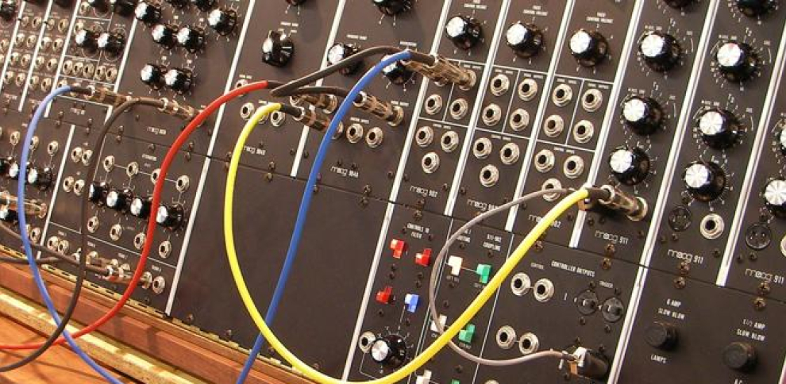

Los sintetizadores son el corazón y alma de la música electrónica. Entender cómo funcionan no solo te permite usar presets de manera más efectiva, sino que también te da el poder de crear sonidos completamente únicos que definirán tu estilo como productor.
¿Qué es un Sintetizador?
Un sintetizador es un instrumento electrónico que genera señales de audio que pueden ser manipuladas para crear una infinita variedad de sonidos. A diferencia de grabar sonidos naturales, los sintetizadores crean sonidos desde cero usando componentes electrónicos.
Componentes Básicos de un Sintetizador
1. Osciladores (VCO - Voltage Controlled Oscillator)

Los osciladores son la fuente de sonido principal. Generan formas de onda básicas:
- Onda Sinusoidal (Sine): El sonido más puro, sin armónicos. Perfecto para bajos sub y tonos simples.
- Onda Cuadrada (Square): Sonido hueco y nasal. Ideal para leads retro y bajos potentes.
- Onda Diente de Sierra (Saw): Brillante y rica en armónicos. Excelente para pads y leads.
- Onda Triangular (Triangle): Similar a la sinusoidal pero con algunos armónicos. Útil para flautas y tonos suaves.
2. Filtros (VCF - Voltage Controlled Filter)
Los filtros modifican el contenido armónico del sonido, dándole carácter y movimiento. Tipos principales:
- Low-Pass: Deja pasar frecuencias bajas, corta las altas. El más común en música electrónica.
- High-Pass: Deja pasar frecuencias altas, corta las bajas. Perfecto para eliminar graves no deseados.
- Band-Pass: Solo deja pasar un rango específico de frecuencias.
- Notch: Elimina un rango específico de frecuencias.
El parámetro más importante del filtro es el Cutoff (frecuencia de corte) y la Resonance (énfasis en la frecuencia de corte).
3. Amplificadores (VCA - Voltage Controlled Amplifier)
Controlan el volumen del sonido a lo largo del tiempo. Trabajan junto con las envolventes para dar forma al sonido.
4. Envolventes (ADSR - Attack, Decay, Sustain, Release)
Las envolventes controlan cómo cambian los parámetros a lo largo del tiempo:
- Attack: Tiempo que tarda el sonido en alcanzar su volumen máximo
- Decay: Tiempo que tarda en bajar desde el pico hasta el nivel de sustain
- Sustain: Nivel que se mantiene mientras se mantiene la nota presionada
- Release: Tiempo que tarda en desvanecerse después de soltar la nota
5. LFO (Low Frequency Oscillator)
Los LFOs son osciladores lentos que no generan sonido audible, sino que modulan otros parámetros para crear efectos como vibrato, trémolo o movimiento en el filtro.
Creando Tu Primer Sonido
Bass Sintético Básico:
- Inicia con una onda diente de sierra
- Añade un filtro low-pass con cutoff alrededor de 200-500 Hz
- Configura ADSR: Attack corto, Decay medio, Sustain alto, Release corto
- Añade un poco de resonancia al filtro para darle carácter
- Experimenta con un segundo oscilador desintonizado ligeramente
Lead Sintético:
- Usa ondas cuadradas o diente de sierra
- Attack rápido, Decay y Release medios
- Filtro low-pass con cutoff más alto (2-5 kHz)
- Añade un LFO al pitch para vibrato sutil
- Experimenta con la resonancia para brillo
Sintetizadores Recomendados para Empezar

Software (VST/AU):
- Serum: Potente y visual, perfecto para aprender
- Vital: Similar a Serum pero gratuito
- Massive X: Profundo y versátil
- Sylenth1: Clásico para sonidos analógicos
Hardware:
- Korg Minilogue: Excelente para principiantes
- Behringer DeepMind: Gran relación calidad-precio
- Moog Sub 37: Sonido analógico legendario
Tips para Diseño Sonoro
- Empieza simple: usa un solo oscilador y ve añadiendo elementos
- Aprende a usar tus oídos: cierra los ojos y escucha los cambios
- Guarda tus presets personalizados para construir tu biblioteca
- Analiza sonidos que te gustan intentando recrearlos
- No hay reglas: si suena bien, está bien
Conclusión
El diseño sonoro con sintetizadores es un arte que requiere tiempo y práctica. No te desanimes si al principio tus sonidos no suenan "profesionales". La clave está en experimentar constantemente y entender cómo cada parámetro afecta el resultado final.
Ejercicio: Dedica 30 minutos cada día solo a experimentar con un sintetizador. No trates de crear música, solo explora y guarda los sonidos interesantes que descubras.